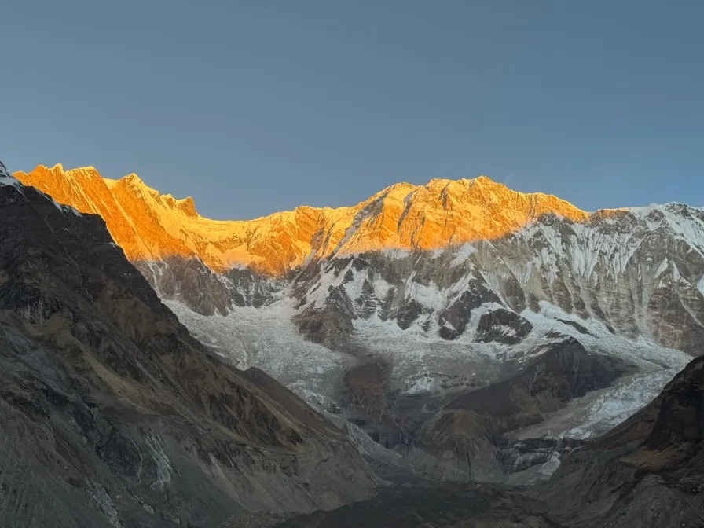
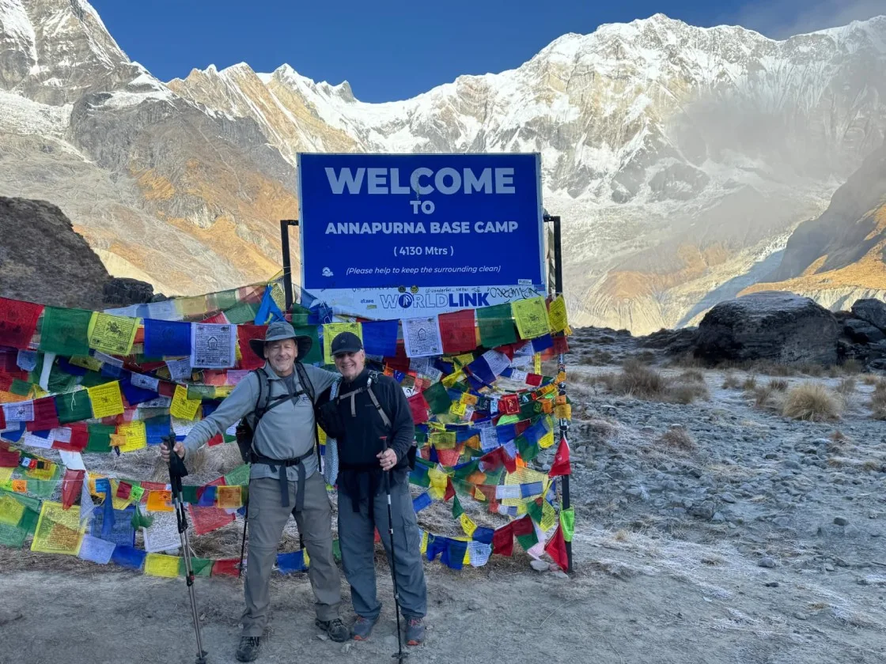
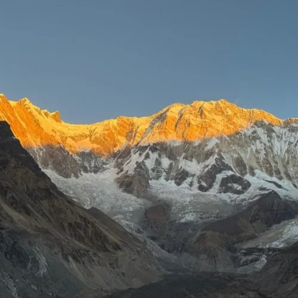
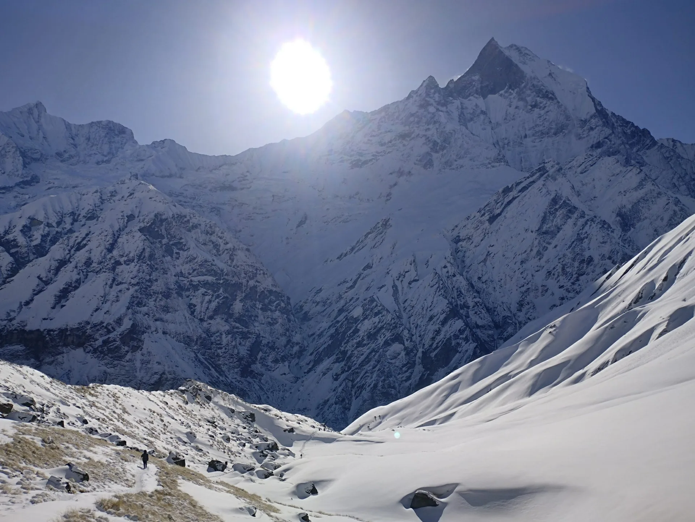
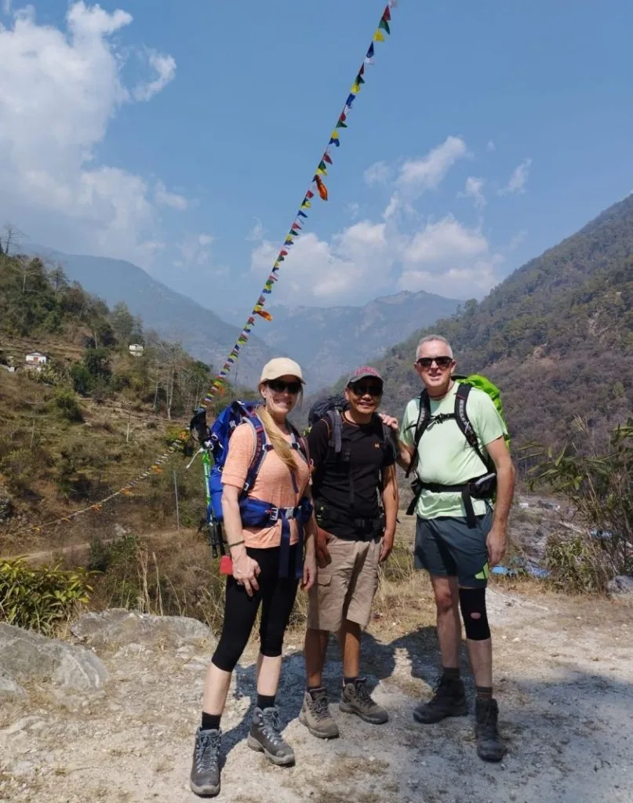

Is Annapurna Base Camp Suitable for First-Time Himalayan Trekkers?
Among Nepal's premier trekking routes, the Annapurna Base Camp trek stands out as the gold standard for introductory high-altitude trekking. While Everest Base Camp takes you to an apex of 5,364 meters across harsh, dusty, sub-zero glacial moraines, ABC culminates at 4,130 meters. This 1,200-meter altitude difference significantly lowers the risk of severe Acute Mountain Sickness (AMS) and ensures that even novice hikers can acclimatize smoothly if they maintain disciplined pacing.
Furthermore, the Annapurna Sanctuary trail passes through diverse ecological zones. You begin in warm, sub-tropical terraced rice fields and lush rhododendron forests before ascending into sub-alpine bamboo groves and finally emerging into the barren, rock-and-ice glacial basin of the Sanctuary. Teahouse villages are situated every 1.5 to 2 hours along the route, meaning you are never more than a short walk from a warm cup of lemon ginger tea, clean drinking water, or a comfortable bench to rest your legs.
The Core Truth for Beginners: You do not need prior mountaineering experience, technical climbing skills, or extreme athletic genetics to complete ABC. What you need is disciplined cardiovascular endurance, strong mental patience, proper footwear, and the willingness to walk slowly at your own rhythm.
Fitness Benchmarks: 8-Week Stair Training & Cardiovascular Prep
The single greatest physical obstacle on the Annapurna Base Camp trek is not altitude; it is stone stairs. Between Nayapul, Ulleri, Chhomrong, and Sinuwa, the trail incorporates more than 6,000 hand-chiseled stone steps. Walking up stairs demands immense cardiovascular lung capacity and quadriceps drive; descending stairs exerts repetitive, high-impact eccentric shock through the knee joints and calf muscles.
If your training consists solely of flat jogging or elliptical machines, your leg muscles will burn out by Day 2. You must train specifically for the mechanical demands of stairs:
| Training Phase | Cardiovascular Focus | Stair Climbing Target | Strength & Mobility Focus |
|---|---|---|---|
| Weeks 1 - 2 | 30 min brisk jogging or cycling (3x/week) | 20 flights of stairs (unweighted) | Bodyweight squats, lunges, calf raises (3x15 reps). |
| Weeks 3 - 4 | 45 min interval running / incline walk (3x/week) | 40 flights of stairs with 3kg daypack | Step-ups on bench, wall sits (60s), hamstring stretches. |
| Weeks 5 - 6 | 60 min trail running or hilly hike (weekend) | 60 flights of stairs with 5kg daypack | Eccentric heel drops, core planks (3x60s), yoga for hip flexors. |
| Weeks 7 - 8 | 2-3 hour weekend outdoor hike wearing boots | 80 flights of stairs with 6kg daypack | Taper intensity during final 5 days; focus on hydration and sleep. |

Altitude Acclimatization for Beginners: Gradual Ascents & AMS Protocols
At 4,130 meters, the atmospheric pressure is roughly 60% of that at sea level. With every breath you take, your lungs absorb roughly 40% fewer oxygen molecules. Your body responds by increasing respiration rate, elevating resting heart rate, and synthesizing more red blood cells.
For beginners, avoiding Acute Mountain Sickness (AMS) requires memorizing one crucial Nepali phrase: 'Bistari, Bistari' (Slowly, Slowly). Rushing up trails to beat other hikers is the fastest way to trigger a debilitating altitude headache.
The Golden Acclimatization Rule: Above 3,000 meters (which begins at Deurali), never increase your sleeping elevation by more than 500 to 600 vertical meters per 24 hours. Always spend a mandatory overnight at Deurali (3,200m) or Machapuchare Base Camp (3,700m) before sleeping at Annapurna Base Camp.
Key altitude rules for first-timers:
- The 4-Liter Rule: Drink 3.5 to 4 liters of warm fluids daily (boiled water, ginger tea, garlic soup). Dehydration thickens your blood and drastically accelerates altitude symptoms.
- Climb High, Sleep Low: After arriving at your teahouse in the early afternoon, unpack your bag, rest for 30 minutes, and take a gentle 100-meter walk higher up the hill before descending for dinner.
- Listen to Your Body: A mild frontal headache that disappears after a hot drink and ibuprofen is common. But if a headache is accompanied by nausea, dizziness, vomiting, or loss of motor coordination (ataxia), you must stop ascending immediately.
The Ideal 10-Day Beginner Itinerary: Paced Safety & Acclimatization
While experienced trekkers or trail runners occasionally rush ABC in 5 to 7 days, beginner hikers should choose a 10-day itinerary. This paced schedule keeps daily walking times to a comfortable 4.5 to 6 hours, incorporates the stunning sunrise detour to Poon Hill (3,210m) for early acclimatization, and ensures your body adapts smoothly without exhaustion:
| Day | Route & Trail Section | Distance | Trek Time | Sleeping Alt. | Beginner Highlight & Focus |
|---|---|---|---|---|---|
| Day 01 | Drive Pokhara to Nayapul / Tikhedhunga, trek to Ulleri | 9.5 km | 4.5 - 5 hrs | 1,960 m | Tackle the stone stairs of Ulleri at a slow, measured breathing pace. |
| Day 02 | Ulleri to Ghorepani through rhododendron forest | 8.5 km | 4.5 - 5 hrs | 2,860 m | Lush ancient forests, bubbling streams, and cooler alpine air. |
| Day 03 | Poon Hill sunrise (3,210m), trek to Tadapani | 11.0 km | 5.5 - 6 hrs | 2,630 m | World-class panoramic sunrise over Dhaulagiri and Annapurna ranges. |
| Day 04 | Tadapani to Chhomrong via Chuile | 9.5 km | 5 - 5.5 hrs | 2,170 m | Beautiful Gurung farming villages and dramatic views of Machapuchare. |
| Day 05 | Chhomrong to Dovan via Sinuwa & Bamboo | 10.8 km | 5.5 - 6 hrs | 2,600 m | Descend Chhomrong stairs, cross bridge, enter lush bamboo defile. |
| Day 06 | Dovan to Deurali via Himalaya Hotel | 8.2 km | 4.5 - 5 hrs | 3,200 m | Pass Hinku Cave; enter sub-alpine canyon; short hiking day for rest. |
| Day 07 | Deurali to Machapuchare Base Camp (MBC) | 5.8 km | 3.5 - 4.5 hrs | 3,700 m | Gentle climb into open valley floor surrounded by vertical snow spires. |
| Day 08 | MBC to Annapurna Base Camp (ABC) celebration | 4.2 km | 2.5 - 3.5 hrs | 4,130 m | Enter the 360-degree Sanctuary basin; breathtaking amphitheater views. |
| Day 09 | ABC sunrise shoot, descend to Bamboo | 15.0 km | 6.5 - 7 hrs | 2,310 m | Downhill return; use trekking poles to cushion knees down to Bamboo. |
| Day 10 | Bamboo to Jhinu Danda hot springs, drive to Pokhara | 12.0 km | 5 hrs trek + 3 hrs drive | 820 m | Soak aching joints in natural hot riverside thermal baths; return to Pokhara. |

Teahouse Living for Novices: Beds, Dining Rooms, Showers & Etiquette
For first-time trekkers, the concept of a 'teahouse' can be mysterious. A Himalayan teahouse is a small, family-run mountain lodge that provides basic sleeping quarters and hot meals. Understanding daily life inside a teahouse will help you adapt quickly:
- The Dining Room is King: The dining hall is the beating heart of every teahouse. In the late afternoon, the central wood or kerosene stove is lit, warming the room. Trekkers eat, drink tea, read, play cards, and socialize here. It is the only heated room in the entire lodge.
- Bedrooms are Unheated: Bedrooms consist of two twin wooden beds with foam mattresses, clean sheets, pillows, and a thick quilt. There are no electrical outlets in the rooms, and walls are thin plywood. Bring a -10°C rated down sleeping bag to stay cozy all night.
- Teahouse Etiquette: It is standard Himalayan custom to eat dinner and breakfast at the lodge where you sleep. Lodge owners earn almost no profit on room fees (which are capped around NPR 500–800) and rely on meal orders to sustain their livelihood.

Beginner Trail Nutrition: Dal Bhat Power, Water Purification & Fueling
Nutrition at high altitude directly dictates how your body recovers overnight. On trail, you will burn between 3,000 and 4,500 calories per day navigating steep staircases with a pack.
The single best fuel on the trail is traditional Nepalese Dal Bhat. Comprising steamed white rice, spiced yellow lentil soup (dal), seasonal potato and spinach curry (tarkari), and fermented pickles, Dal Bhat is cooked fresh twice daily in huge pots. It provides complex carbohydrates, plant-based protein, and vital electrolytes—and teahouses always offer unlimited free refills of rice, lentils, and vegetables until you are completely full!
For water, avoid buying single-use plastic mineral water bottles, which are banned or heavily restricted in ACAP to protect the fragile alpine ecology. Instead, carry two 1-liter reusable wide-mouth Nalgene bottles. Fill up with tap water at teahouses and sterilize it using chlorine dioxide water purification drops (Aquatabs) or a UV SteriPEN. Alternatively, purchase boiled water at teahouses in the evening.
First-Timer Gear Blueprint: What to Buy, Rent in Pokhara & Leave Behind
Many beginners spend thousands of dollars on expensive mountaineering gear they will only use once. In reality, you can buy basic technical layers at home and rent bulky expedition gear (like down sleeping bags and heavy down jackets) in Pokhara or Kathmandu for a fraction of the cost:
| Gear Item | Specification / Recommendation | Buy at Home vs Rent | Estimated Cost |
|---|---|---|---|
| Hiking Boots | Waterproof, high-ankle, broken-in | Buy at home (mandatory!) | $120 - $180 (Buy) |
| Down Sleeping Bag | -10°C to -15°C comfort rating | Rent in Pokhara / Kathmandu | $1.50 - $2.00 / day (Rent) |
| Heavy Down Jacket | 700-fill power with insulated hood | Rent in Pokhara / Kathmandu | $1.50 - $2.00 / day (Rent) |
| Trekking Poles | Adjustable aluminum with flick-locks | Buy in Pokhara or bring from home | $12 - $20 / pair (Buy local) |
| Base Layers | 2x 200g Merino wool tops and bottoms | Buy at home | $60 - $90 (Buy) |
| Trekking Socks | 3x merino wool medium cushion | Buy at home | $35 - $50 (Buy) |
| Daypack | 28L to 35L with supportive hip belt | Buy at home | $70 - $120 (Buy) |
Preserving Your Knees: Proper Boot Fitting & Trekking Pole Technique
The repetitive downward shock on the Chhomrong and Ulleri staircases can cause intense knee discomfort if you do not use proper biomechanical protection. Here is how to keep your joints healthy:
- Master the Trekking Pole Wrist Straps: Slip your hand up through the bottom of the loop and grip the handle over the strap. This allows your wrist and forearm to bear weight directly through the strap rather than requiring a tight death-grip with your fingers.
- Lengthen Poles on Downhills: When descending steep stone steps, lengthen both poles by 5 to 10 cm. Plant the poles on the step below before stepping down. Your arms absorb up to 25% of the gravitational impact before your foot lands.
- Lock Your Heel into Your Boot: Make sure your boots have roughly a thumb's width of empty space in front of your toes. Use the 'heel-lock' lacing technique through the top ankle eyelets to prevent your foot from sliding forward on descents and bruising your toenails.

Best Seasons for Beginners: Autumn vs Spring Climates Compared
Choosing the right season is the single most critical decision for a beginner trekker. Trekking during extreme winter freeze or torrential monsoon rains adds unnecessary hardship and hazard.
For first-timers, two prime windows offer ideal conditions:
- Autumn (October & November): The undisputed king of Himalayan trekking seasons. The summer monsoon has washed all dust and haze from the atmosphere, delivering day after day of crisp, brilliant blue skies, stable weather, and moderate temperatures. It is the most popular season, so trails and teahouses are lively and bustling.
- Spring (March & April): The second peak window. Days are slightly warmer and longer, and the lower forests between Ghorepani, Tadapani, and Chhomrong explode into a dazzling spectacle of blooming rhododendrons, magnolias, and wild orchids. Afternoon haze can build up, but morning summit panoramas are glorious.
Permits, Porters & Budgeting: How Much Cash Do Beginners Really Need?
Preparing your finances accurately prevents uncomfortable surprises on trail. There are no ATMs beyond Pokhara, so you must carry adequate Nepalese Rupee cash for the entire trek:
| Expense Item | Cost (NPR) | Cost (USD) | Beginner Advice |
|---|---|---|---|
| ACAP Entry Permit | NPR 3,000 | ~$23 | Official conservation area permit; arranged in Pokhara. |
| TIMS Card | NPR 2,000 | ~$15 | Trekkers' Information Management System card. |
| Daily Meals & Hot Drinks (10 days) | NPR 3,000 - 4,000 / day | ~$23 - $30 / day | Covers hearty breakfast, lunch, dinner, tea, and snacks. |
| Teahouse Lodging (9 nights) | NPR 500 - 800 / night | ~$4 - $7 / night | Clean private twin room in mountain lodges. |
| Hot Showers & Charging (Incidentals) | NPR 400 - 600 / day | ~$3 - $5 / day | Pay-per-use gas showers and solar battery charging. |
| Licensed Guide Fee | NPR 3,500 - 4,500 / day | ~$26 - $34 / day | Includes guide wage, food, lodging, and professional insurance. |
| Porter (Carries 18-20kg duffel) | NPR 2,800 - 3,500 / day | ~$21 - $26 / day | Highly recommended for beginners; allows you to carry only a light daypack. |
We recommend withdrawing at least NPR 30,000 to 40,000 in cash per person in Pokhara before heading into the mountains to cover all daily incidentals and end-of-trek tips comfortably.
Why First-Timers Should Always Trek With a Licensed Guide
Under regulations enacted by the Nepal Tourism Board, foreign trekkers are legally required to trek with a certified guide registered through a licensed agency. For first-timers, this regulation is an enormous blessing rather than a restriction.
A professional local guide does far more than point the way on the path. Your guide:
- Monitors your daily oxygen saturation levels and pulse with an onboard fingertip pulse oximeter.
- Calls ahead to teahouse owners to secure comfortable private rooms and hot meals during peak seasons.
- Knows the safe alternative high-routes through the Modi Khola gorge if rain or snow creates rockfall hazards.
- Arranges immediate emergency medical helicopter evacuation if severe illness or injury occurs.
- Introduces you to Gurung cultural customs, local traditions, and the sacred mythology of Machapuchare (the unclimbed 'Fishtail' peak sacred to Lord Shiva).

Sanitation, Squat Toilets & Staying Healthy on Trail
Maintaining high standards of personal hygiene is essential to avoid gastrointestinal issues (commonly dubbed the 'Himalayan Tummy'):
- Squat Toilets: At higher elevations, bathrooms are traditional porcelain squat toilets. Keep your core strong, balance on the balls of your feet, and carry your own toilet paper in a waterproof bag.
- Hand Sanitizer Discipline: Clean your hands with alcohol sanitizer before every meal and every time you touch a door latch or banister.
- Wet Wipe Showers: Above Deurali, ambient air is freezing. Stripping down for a shower in an unheated cubicle easily triggers chest colds. Carry two packs of biodegradable wet wipes for daily sponge baths.
Mindset & Psychological Resilience: Embracing the Himalayan Rhythm
Trekking in the Himalaya is as much a psychological journey as a physical one. There will be moments when your legs burn on endless stairs, when your fingers feel chilly in the morning, or when you miss your comfortable home mattress. This is entirely normal.
Embrace the simplicity of trail life: walking, breathing, eating hearty meals, and watching the sun paint the world's greatest mountains in gold and rose. Leave behind expectations of fast-paced urban luxury, disconnect from constant phone notifications, and let the timeless serenity of the Annapurna Sanctuary restore your spirit.

The 10 Golden Rules for First-Timer Success at Annapurna Base Camp
To ensure your very first Himalayan trek is safe, comfortable, and unforgettable, commit these ten golden rules to memory:
- Train on Stairs for 6 to 8 Weeks: Gym cardio alone won't cut it. Climb real steps wearing a weighted backpack.
- Hire a Porter for Heavy Bags: Carrying only a 5kg daypack transforms a grueling ordeal into an absolute pleasure.
- Never Hike in Unbroken Boots: Break in your boots thoroughly weeks before boarding your flight to Nepal.
- Walk 'Bistari, Bistari' (Slowly, Slowly): Maintain a pace where you can comfortably speak a full sentence without gasping.
- Use Two Trekking Poles Correctly: Learn to use wrist straps so your arms absorb downhill impact on steps.
- Eat Fresh Dal Bhat Twice Daily: It is clean, nutritious, easy to digest, and includes free unlimited refills.
- Drink 4 Liters of Warm Fluids Daily: Dehydration is the #1 trigger for altitude headaches and fatigue.
- Pack a -10°C Comfort-Rated Sleeping Bag: Teahouse rooms are unheated; warm sleep ensures physical recovery.
- Bring Cash in Small Denominations: Withdraw NPR 35,000+ in Pokhara; there are zero ATMs on the trail.
- Trek With a Trusted Certified Agency: Choose a licensed partner like Igloo Himalaya Treks for expert guides, safety gear, and flawless mountain logistics.

Frequently Asked Questions
Select a category below to explore expert answers to the most common questions travelers ask about Annapurna Base Camp for Beginners:
Difficulty & Fitness

Ready to Experience the Himalayas?
Whether you are preparing for high-altitude trekking, cultural circuits, or alpine summit expeditions, start planning a bespoke journey tailored to your fitness, travel season, and style.